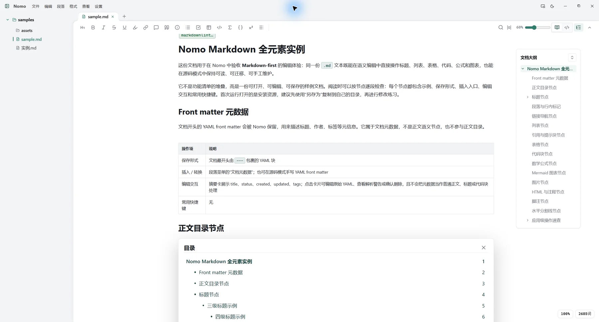
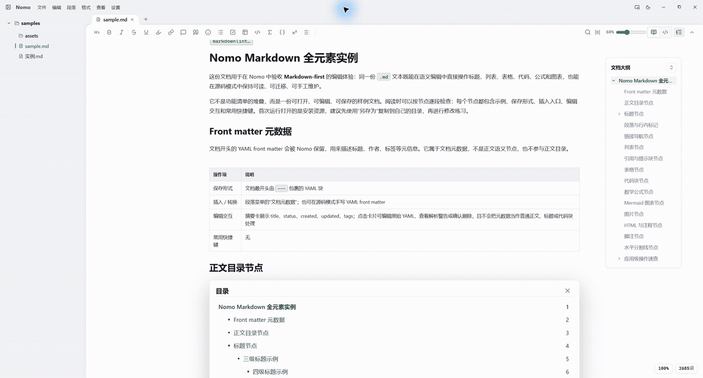
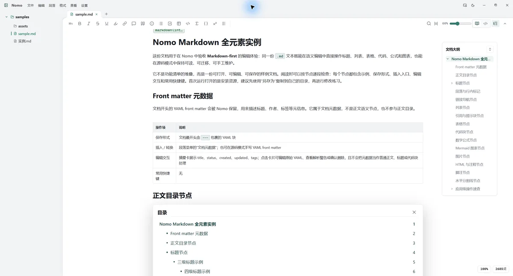

本地优先
文件留在你手里
直接打开本地 Markdown、TXT 和 JSON。自动保存、保存前快照和外部变更提醒，让修改更安心。
文件夹
Nomo
.md

标题、列表、表格、代码和图表都能直接编辑。需要核对原文时，一键回到源码。来回切换的始终是同一份标准 Markdown 文件。


Windows 安装包约 10 MB。打开快、占用小，适合一直放在桌面上，随时记、随时改。
不要求账号，不制造新的内容孤岛。Nomo 把常用能力放进熟悉的桌面工作流。
本地优先
直接打开本地 Markdown、TXT 和 JSON。自动保存、保存前快照和外部变更提醒，让修改更安心。
不只短笔记
文档大纲、章节重排、查找替换、阅读位置恢复，帮助你在内容变长后仍然找到方向。
继续流转
支持导出 HTML 和 PDF，也能处理代码、公式、Mermaid 图表和本地图片。
Windows 和 macOS 都能使用。文件夹、标签页、小窗和系统集成，让 Markdown 自然融入日常工作。
轻量、现代、无感。Nomo 已提供 Windows 和 macOS 版本。